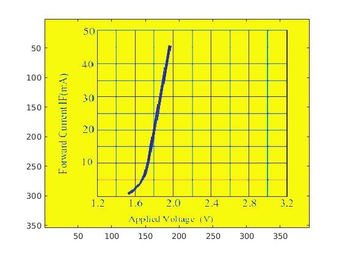
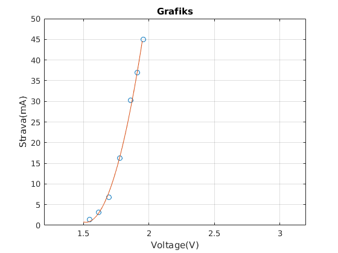

Mērījumu datu apstrāde
%Grats Grāvelsins - REBC04 A = imread('a.png'); B = imread('b.png'); figure(1),image(A),shg figure(2),image(B),shg figure(2),image([1.2 3.2],[50 0],B), set(gca,'YDir','normal') %[x,y] = ginput(7) x = [1.5500 1.6184 1.6959 1.7781 1.8602 1.9103 1.9560]; y = [1.3385 3.1413 6.7469 16.2115 30.1830 36.9434 44.9057]; plot(x,y,'*r') U = 1.5:0.01:1.95; C = polyfit(x,y,2) %C = [237.4828 -721.9800 549.4505]; I = C(1)*U.^2+C(2)*U+C(3); plot(x,y,'o',U,I) C = polyval(C,U); plot(x,y,'o',U,I) xlabel('Voltage(V)'); ylabel('Strava(mA)') title('Grafiks'); axis([1.2 3.2 0 50]) grid %%Secinajumi: Ko es saprastu? %1) Es ielasīju bildes matlaba. %2)Apgriezu asis, lai būtu pareizi jeb sakristu. %3)Nolasījām 7 punktus un pēc tiem zīmēju grafiku %4)Ar polyfit palīdzību aprēķināju vērtības un pēc tam izveidoju 2 %pakāpes polinomu. %5)ar xlabel, ylabel, title - Var nomainīt grafikas asu nosaukumus un %grafika nosaukumu, grid uzlieku grafikam tīklojumu. %Ar šīm darbībām var viegli paņemt bildi ar grafiku no interneta un %uztaisīt tieši tādu pašu matlabā.
C = 237.4345 -721.8205 549.3189 